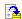

Обработка предназначена для установки признака оплаты группе неоплаченных банковских документов, а также для просмотра списка документов, оплаченных за какой – либо день.
При настройке обработки указывается:
Значение флага "Признак вывода только оплаченных платежных документов" влияет на автоматическое заполнение табличной части обработки.
Если флаг установлен – в табличную часть будут отобраны только те платежные документы, которые оплачены и имеют дату оплаты равной указанной в шапке обработки.
Если флаг снят - система отбирает документы по выбранному банковскому счету с датой оплаты, равной дате выписки, а также все остальные проведенные на платеж по счету выписки документы с датой, меньшей либо равной дате выписки.
После указания реквизитов, табличная часть заполняется в автоматическом (по кнопке «Заполнить») режиме. Для неоплаченных документов, вошедших в выписку, полученную из банка, необходимо проставить флажок и нажать кнопку «Провести документы» .
При этом документам будет проставлен реквизит «Оплачено», дата оплаты установлена равной указанной в обработке, и документы будут перепроведены.
Важно. При отсутствии в базе документа, по которому прошло движение денежных средств согласно данным банковской выписки, его необходимо зарегистрировать и установить признак оплаты (с помощью обработки «Выписка банка» или напрямую из формы документа).
Для выбранного расчетного счета в регистре сведений "Счета учета денежных средств" может хранится счет учета.
Если же счет учета для расчетного счета не задан, то по умолчанию за него принимается счет 1030.
Счет учета может быть только один (денежные средства по одному расчетному счету могут учитываться только на одном бухгалтерском счете).
"Остаток на начало дня" расчитывается именно для счета учета (определенного по расчетному счету или назначенному по умолчанию).
Оборот ("Приход" и "Расход") расчитывается только по платежным документам - "Платежному поручению входящему", "Платежному поручению исходящему", "Платежному ордеру списания денежных средств", "Платежному ордеру поступления денежных средств", "Приходному кассовому ордеру", "Расходному кассовому ордеру".
"Остаток на конец дня" расчитывается по полученным ранее значениям "Остаток на начало дня", "Приход" и "Расход":